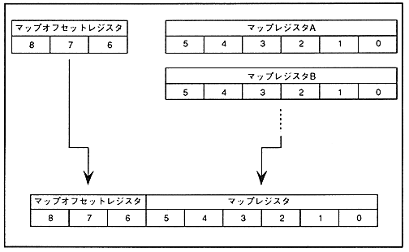

The map is composed of 4 planes (normal scroll screen) or 16 planes (rotary scroll screen), and each screen is a 6-bit to specify the start address of the pattern name table for each plane. Each map register has a number of planes. In addition, there is one 3-bit map offset register attached to the upper part of the map register. In the 9-bit map specification register, the bit used and the address value indicated by the register change depending on the pattern name data size and character size. Figure 4.14 shows the relationship between the map register and map offset register.
Figure 4.14 Map specification register

Table 4.8 shows the bits used in the map specification register and the register address value according to the pattern name data size and character size.